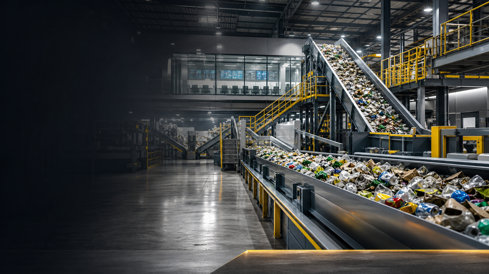
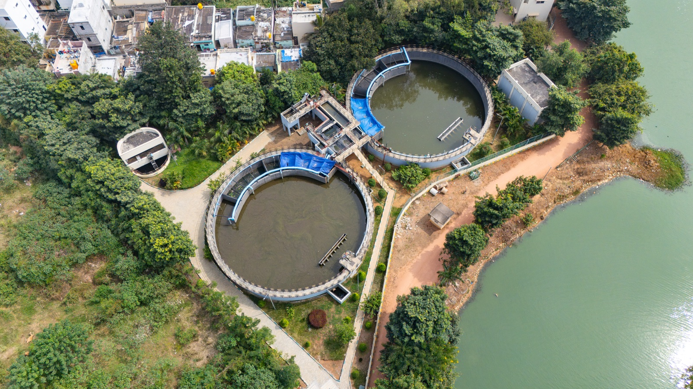
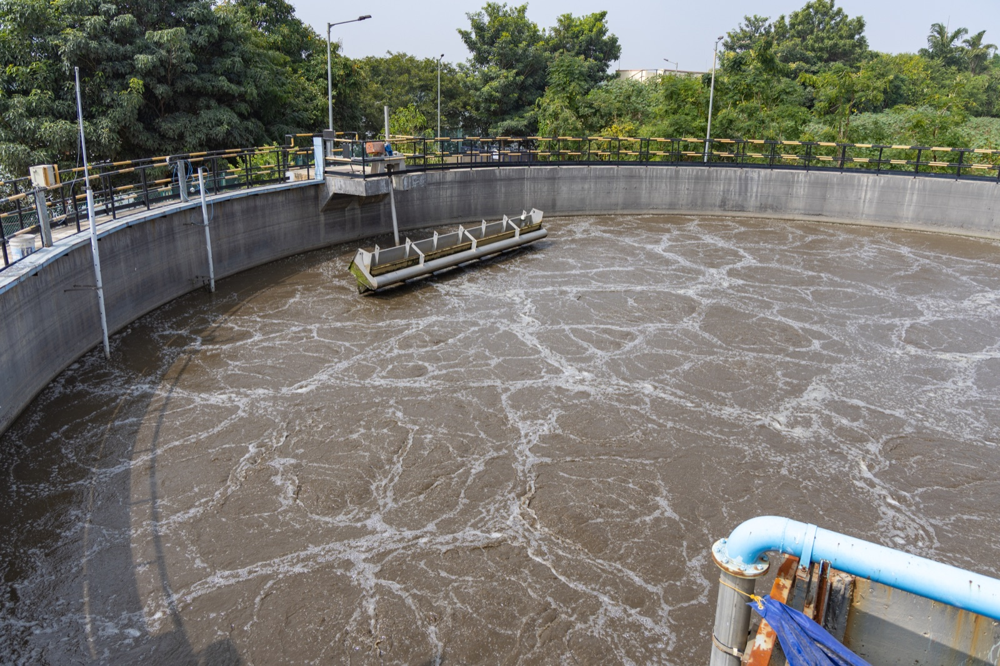
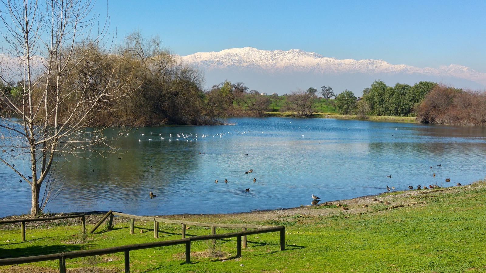

Wastewater treatment

We Buy Waste | Resource Recovery | Wastewater Treatment | Carbon Management
A privately owned waste and carbon management company helping organizations recover value from waste streams, manage carbon exposure and build practical circular economy solutions.
Wastewater treatment
Waste, treatment residuals and recovery questions route through structured review before any commitment.
Quality, logistics, safety and feasibility determine the appropriate next step.
Every CTA lands on a real form, route, email or preview page.
Review principles
Non-confidential intake and controlled feasibility review.
Routes are based on category, risk, documentation and commercial fit.
Inquiry, assessment, acceptance and commitment remain separate.
Written instructions precede any physical movement.
Core solutions



Helios v1
Guided routing only. No prices, no acceptance promises, no hazardous instructions and no protected disclosures.